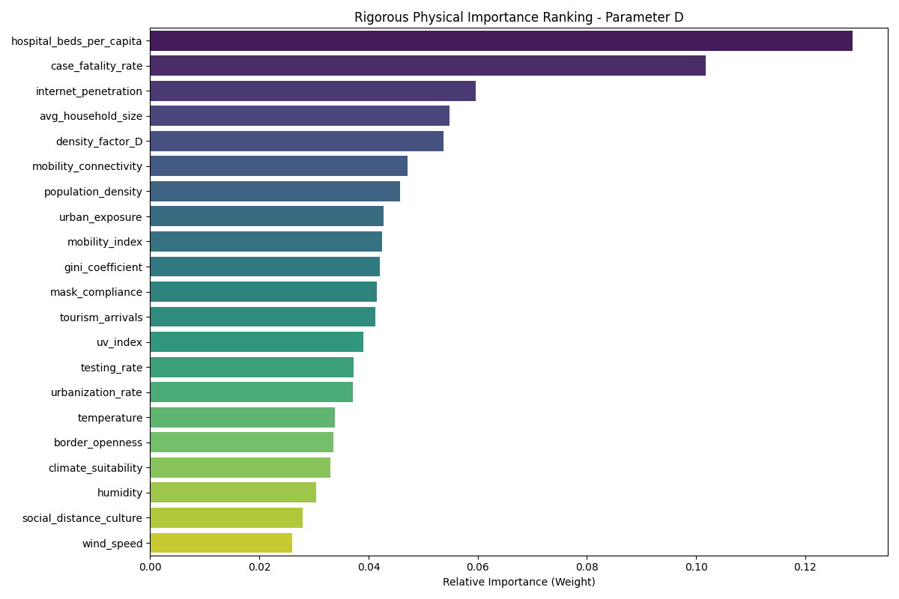
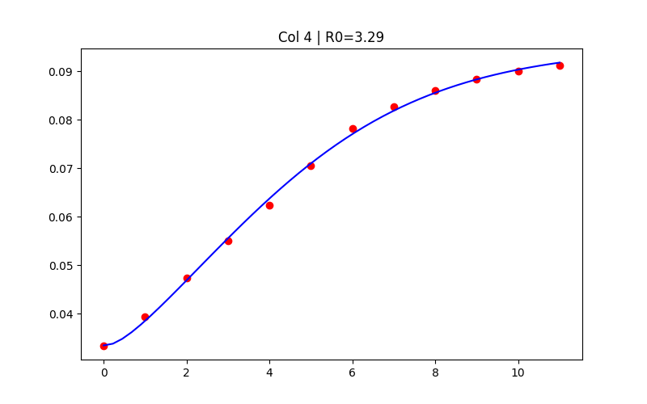
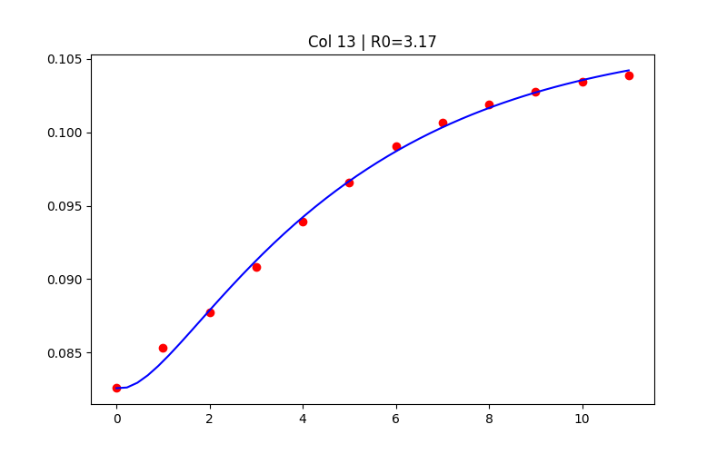
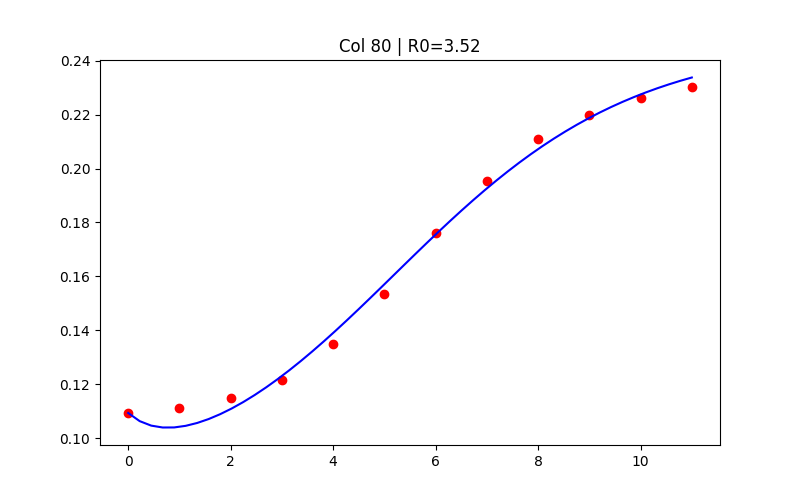
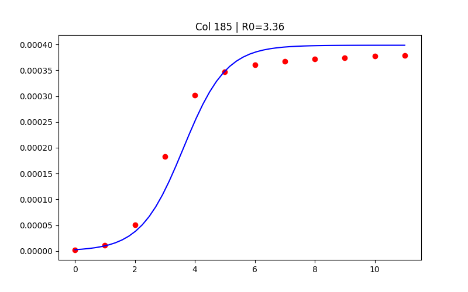
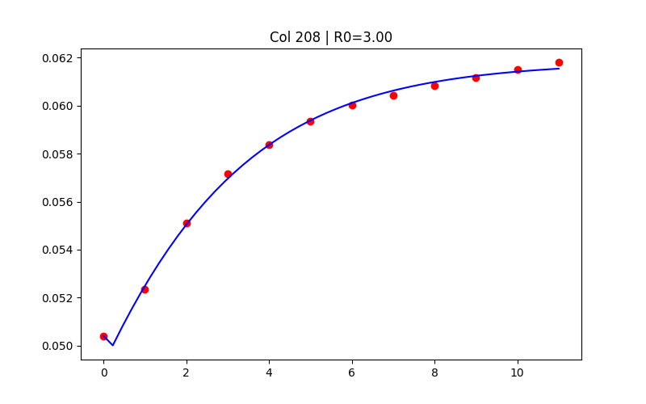

🔬 Inverse Problem Pipeline: Real-World Features → PDE Parameters
We solve the inverse problem of the Fisher-KPP PDE: given observed infection curves for 240 region-quarter combinations (30 regions × 8 quarters), we invert for the kinetic parameters D, r, γ using a CUDA-accelerated 2D PDE solver. Then, Random Forest regressors map socioeconomic features to these parameters, enabling prediction for unseen regions.
📊
240 Infection Curves
30 Regions × 8 Quarters
12 sub-periods each
→
⚡
2D PDE Solver
CUDA / CPU
Circular domain, N=201
→
🎯
D, r, γ per Region
least_squares (TRF)
+ Adam (batch GPU)
→
📐
~15 Features
Socioeconomic + Engineered
Interactions
→
🤖
Stacking Ensemble ×3
XGBoost + ExtraTrees → Ridge
for D, r, γ separately
⚡ PDE Solver (Forward Problem)
- Domain: Circular, R = √(Area/π) per region
- Grid: N×N finite difference (51 CPU / 201 CUDA)
- IC: Gaussian calibrated to first data point
- BC: Border openness → Neumann derivative
- CFL: dt = 0.9·dx²/(4D) adaptive stability
- CPU: scipy.optimize.least_squares (TRF)
- GPU: PyTorch batch 240 regions, Adam lr=0.05
🤖 Stacking Ensemble (per parameter)
- Base learners: XGBoost (1000 trees, depth=8, lr=0.03) + ExtraTrees (1000 trees, depth=15)
- Meta-learner: RidgeCV (stacking)
- Validation: 5-fold CV, out-of-fold R²
- Lag-1 feature: Previous quarter's parameter value (temporal continuity)
- Region baseline: Per-region mean as anchor
Engineered Features per Target:
| Target | Key Feature | Transform |
|---|
| D (diffusion) | mobility_density | mobility × density (log-space) |
| r (growth) | growth_climatic | density × exp(-10(T−0.45)²) |
| γ (clearance) | healthcare_strength | hospital_beds × testing_rate |
Feature Importance — Parameter D

📈 PDE Fitting Results — Representative Regions
Red dots: observed infection rates (12 sub-periods per quarter). Blue line: Fisher-KPP PDE fitted curve.

Col 4 | R₀ = 3.29

Col 13 | R₀ = 3.17

Col 80 | R₀ = 3.52

Col 185 | R₀ = 3.36

Col 208 | R₀ = 3.00
✅ Key Insight: By solving the inverse problem, we extract physically meaningful parameters from observed data. The Random Forest then reveals which socioeconomic factors drive each PDE parameter — enabling predictive modeling for pandemic preparedness in new regions.